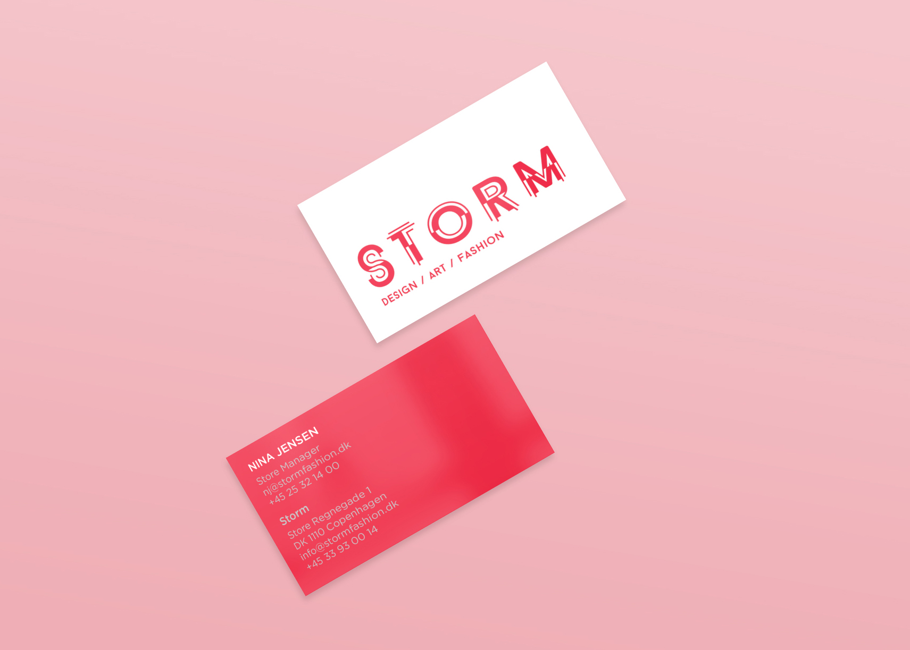
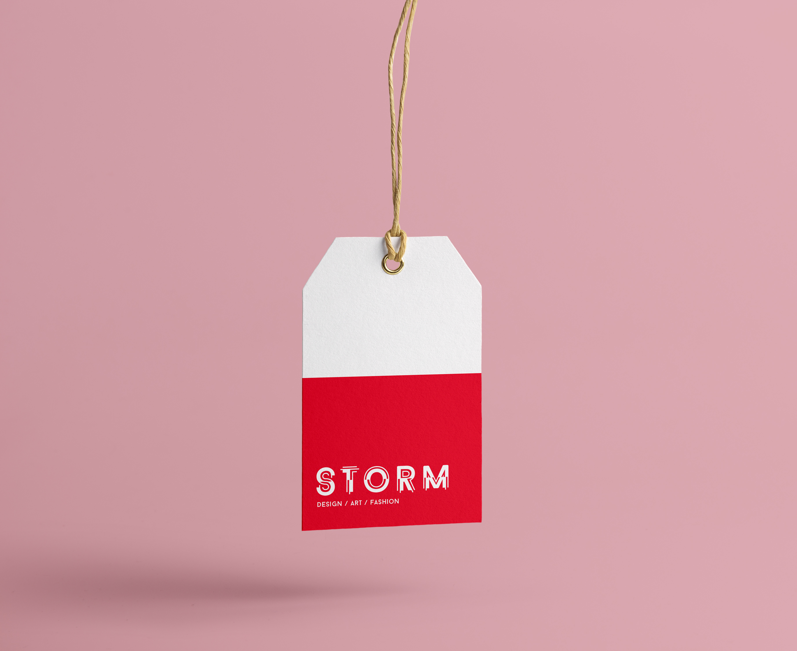
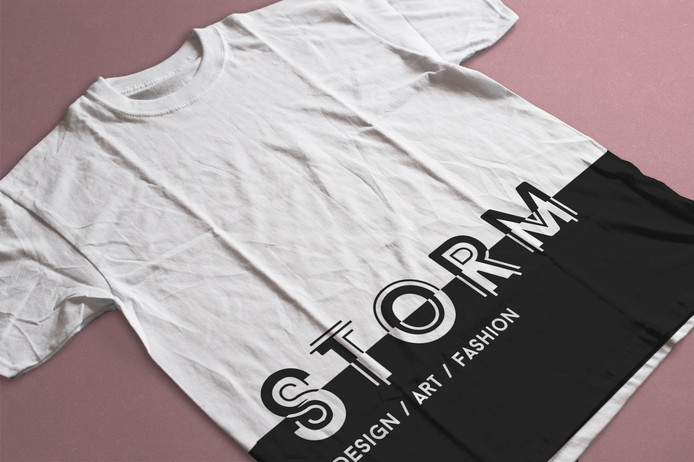

How do you update an already established and successful brand?
During the summer of 2015 I had the privilege of spending seven weeks in Copenhagen, Denmark studying graphic design through the Study Abroad in Scandinavia (DIS) program. My class travelled to various agencies and museums in Denmark, Sweden and Finland where we researched Scandinavian design and its history. When we returned to Copenhagen we spent four weeks re-branding a famous Copenhagen store called Storm.
Storm sells a carefully curated selection of high-end, trendy items that make it an extremely popular store especially for the young and fashion-forward. Their branding focuses on a simple, sporty style logo. They mostly stick to black and white but use pops of neon orange and pink.
Bright | Cutting edge | Modern | Bold | Experimental
In order to accomplish that balance between the classic and the modern I altered an already-existing font and turned it into something that could be uniquely Storm's. I wanted a sharp sans-serif font with a Scandinavian look so I chose to alter Baron Neue, a clean, classic font that would lend itself well to my plans.
One of the requirements Storm made for the logo, was that we keep “Design Art Fashion” in it. I decided to make the word Storm from the alphabet I altered, and then add “Design Art Fashion” in the same font except unaltered. Although both alphabets look quite different, since mine is made from Baron Neue, the two naturally work together.
One of the main parts of our project was designing a poster for an event for Copenhagen Fashion Week called "Storm and Family." The poster had to include the names of the presenting designers, the words "Copenhagen Fashion Week," the date and location of the event, and the URL for Storm's website. I started by experimenting with photographs of clouds and the element of distortion that I wanted to be a central part of Storm's branding. I wasn't able to create the sort of balance I wanted so I began to experiment more with the alphabet that I had created.
I decided to keep my alphabet and to add in an element of distortion from my previous designs. I took a plain striped background but altered each line to give it a liquid effect. I made the names of the designers bold and clear and put the less important information underneath.
Going to Denmark and studying graphic design at DIS has been the most important experience of my life as a designer. The challenge of working with graphic design students from some of the best design schools in the United States pushed me to do my absolute best. The professors there inspired me as a designer in ways I had not thought possible. The lessons and skills I learned at DIS have greatly improved and strengthened my work.
Process Document